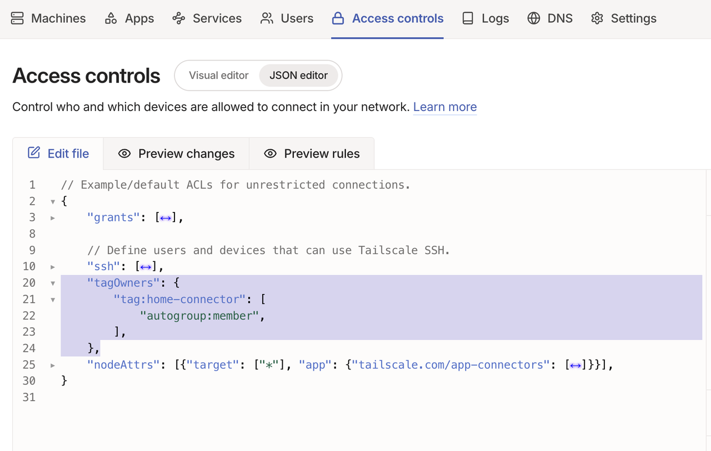
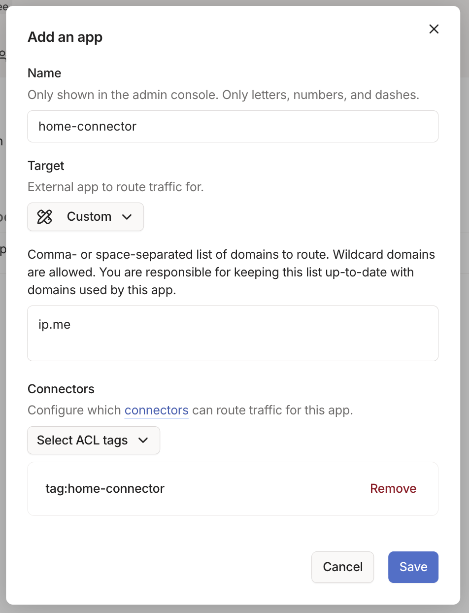
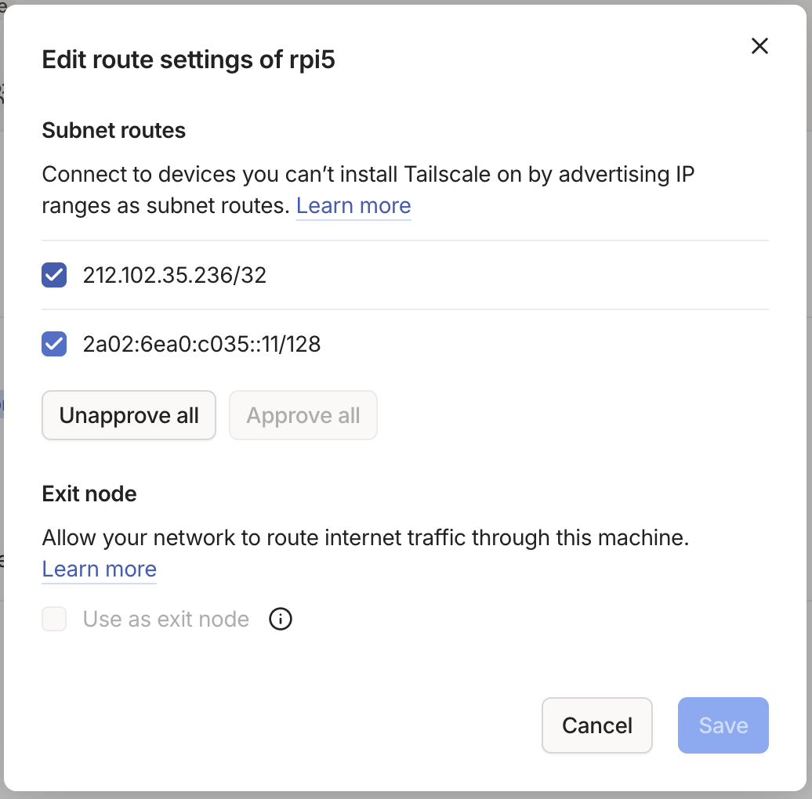
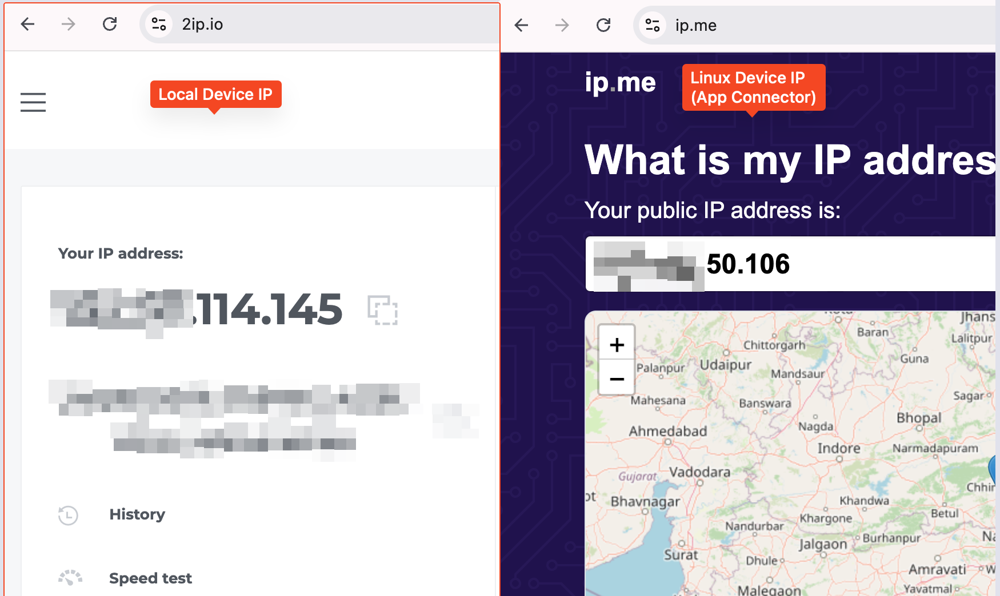

Setup Tailscale App Connector in 3 easy steps
Problem Statement
In the earlier post, we have seen how to route specific websites to an exit node using a SOCKS proxy & browser extension(or a PAC file).
With this approach, when we need to work on multiple computers, we need to setup the SOCKS proxy & browser extension individually.
Instead we can use Tailscale's App Connectors to route specific websites through selected nodes.
Tailscale docs are too complicated for this App connectors. Here is a simplified version of the steps.
Tailscale - App Connectors
Note: There is no need for publicily reachable IP address for the Tailscale node which is used as App Connector. (Thanks Chris Smith for pointing it out. Tailscale docs are misleading in this regard.)
- In the Tailscale admin console, go to the "Access control" section & add
tagOwners.
"tagOwners": { "tag:home-connector": [ "autogroup:member", ], },

- Use any Linux machine (it doesn't need static IP) to setup the App Connector. Install Tailscale on it. Advertise it as an app connector.
$ sudo tailscale up --advertise-tags=tag:home-connector --accept-routes
Enable IP forwarding on the machine. If your Linux system has a /etc/sysctl.d directory, run
echo 'net.ipv4.ip_forward = 1' | sudo tee -a /etc/sysctl.d/99-tailscale.conf echo 'net.ipv6.conf.all.forwarding = 1' | sudo tee -a /etc/sysctl.d/99-tailscale.conf sudo sysctl -p /etc/sysctl.d/99-tailscale.conf
Otherwise, run
echo 'net.ipv4.ip_forward = 1' | sudo tee -a /etc/sysctl.conf echo 'net.ipv6.conf.all.forwarding = 1' | sudo tee -a /etc/sysctl.conf sudo sysctl -p /etc/sysctl.conf
- From the Tailscale admin console, create a new app connector.

In the "Target" field, we can select any existing app or we can use custom target so that we can route our desired websites.
For now, I am adding ip.me domain so that we can verify if the traffic is routed through the connector.
- From the "Machines" page, select the device and approve the requested subnets.

From browser, lets visit 2ip.io to see our device ip address. Next, lets visit ip.me to ensure we are seeing the connector's IP as this domain will be served by app connector.

Conclusion
We can use App Connectors to route specific websites through a Tailscale node without needing to setup SOCKS proxy or browser extensions on each device.
Need further help with this? Feel free to send a message.

Anand Reddy Pandikunta (ChillarAnand)
Improving Health & Wealth with Technology